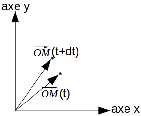

Nous allons commencer par faire un peu de physique, plus exactement, nous allons évoquer une "branche" de la physique qui se nomme "mécanique du point".
Soit un mobile (objet qui peut se déplacer) M que l'on considérera comme ponctuel (on pourra raisonner comme si c'était un point au sens mathématique du terme, même si à l'écran ce n'en est pas un).
Nous avons déjà étudié ce genre de problème dans cette activité avec une balle qui se déplaçait. Dans cette activité, nous nous intéressions aux coordonnées (x,y) de la balle que nous modifions à chaque nouvelle image (ce qui donnait l'illusion du mouvement).
Cette fois, nous n'allons pas (directement) travailler avec les coordonnées du mobile M (notre balle), mais nous allons définir un vecteur "position" $\vec{OM}$ (le point O est l'origine du repère).
Si vous réfléchissez un peu, vous allez vite vous rendre compte que cela ne change strictement rien : les coordonnées du point M et les coordonnées du vecteur $\vec{OM}$ sont identiques. Pour l'instant, on ne voit pas trop l'intérêt de raisonner avec un vecteur $\vec{OM}$ au lieu de raisonner directement sur les coordonnées du point M !
Commençons à programmer :
Nous allons utiliser la programmation orientée objet en créant un objet "Mobile". Par souci de clarté, nous allons séparer notre programme principal et notre objet "Mobile" en "rangeant" notre objet dans un fichier à part : nous aurons notre programme principal dans le fichier "script.js" et l'objet "Mobile" dans le fichier "mobile.js". Si nécessaire, n'hésitez pas à vous rafraichir la mémoire sur la programmation orientée objet ici.
Saisissez, analysez et testez ce code
mobile.js
Mobile=function () {
this.OM = new createVector(width/2,height/2);
this.affiche=function(){
fill(0);
ellipse(this.OM.x,this.OM.y,20,20);
}
}
script.js
var mob;
function setup(){
createCanvas(200,200);
mob=new Mobile();
}
function draw(){
background(255);
mob.affiche();
}
À part l'utilisation du vecteur $\vec{OM}$, une seule chose nouvelle dans cet exemple : l'utilisation des variables width et height qui sont des variables p5js. width et height ont respectivement pour valeur la largeur de la fenêtre (en pixel) et la hauteur de la fenêtre (en pixel). Les width/2 et height/2 permettent donc de placer notre mobile au centre de la fenêtre (quels que soient les paramètres de la fonction createCanvas).
Notre mobile M (balle) va maintenant se déplacer.
Nouvelle incursion dans le monde de la "mécanique du point" :
Qui dit déplacement, dit introduction de la notion de temps ("il était là et l'instant suivant il est ici !")
Nous allons aussi introduire le vecteur "déplacement" : $d\vec{OM}$.
Soit $\vec{OM}(t)$ le vecteur position du mobile M à l'instant t et $\vec{OM}(t+dt)$ le vecteur position du mobile M à l'instant t+dt.
Pendant dt seconde, le mobile s'est déplacé comme indiqué ci-dessus.
Par définition : $\vec{OM}(t+dt)=\vec{OM}(t)+d\vec{OM}$
Si l'on connaît la position de M à l'instant t ($\vec{OM}(t)$) et si l'on connaît le vecteur déplacement $d\vec{OM}$ (déplacement pendant la durée dt), on pourra donc calculer la nouvelle position du mobile M à l'instant t+dt ($\vec{OM}(t+dt)$)
Une question vient immédiatement ! Comment calculer $d\vec{OM}$ ?
Pour répondre à cette question, nous allons devoir introduire le vecteur vitesse.
La vitesse, vous connaissez, mais le vecteur vitesse $\vec{v}$, peut-être pas ?
Pour commencer, la norme du vecteur vitesse $||\vec{v}||$ correspond à la vitesse telle que vous la connaissez (quotient de la distance parcourue par le temps mis pour parcourir cette distance) en mètre par seconde ou encore en kilomètre par heure.
Pour le reste, vous avez juste besoin de savoir que : $d\vec{OM}=\vec{v}.dt$ (le point . représente ici une multiplication, nous avons le produit d'un vecteur ($\vec{v}$) par un réel (la durée dt))
Essayons de "traduire" tout cela afin de l'inclure dans notre programme.
Première question à se poser : que va représenter la durée dt dans notre programme ?
dt représente, en quelque sorte, la durée qui s'écoule entre 2 calculs du vecteur position $\vec{OM}$. Dans notre programme, nous allons calculer le vecteur position toutes les dt secondes.
Sachant qu'en général, les calculs sont effectués à chaque nouvelle image, la durée dt va correspondre au temps qui s'écoule entre 2 images.
Comment calculer cela dans p5js ?
P5js propose la fonction frameRate() qui renvoie le nombre d'images par seconde. J'espère qu'il sera donc évident pour vous que :
dt=1/frameRate();
si vous n'êtes pas convaincu, faites un simple produit en croix.
Maintenant que le vecteur position de notre mobile M va évoluer avec le temps, nous allons introduire une nouvelle méthode à notre objet "Mobile" : la méthode "update" qui sera donc "chargée" d'actualiser le vecteur $\vec{OM}$.
Saisissez, analysez et testez ce code :
mobile.js
Mobile=function () {
this.OM = new createVector(width/2,height/2);
this.dOM = new createVector();
this.v = new createVector();
this.affiche=function(){
fill(0);
ellipse(this.OM.x,this.OM.y,20,20);
}
this.update=function(dt){
//permet d'avoir dOM=v.dt
this.dOM = p5.Vector.mult(this.v,dt);
//permet d'actualiser le vecteur position du mobile M (équivalent à "OM(t+dt)=OM(t)+dOM")
this.OM.add(this.dOM);
}
}
script.js
var mob;
function setup(){
createCanvas(200,200);
mob=new Mobile();
}
function draw(){
var dt=0;
background(255);
if (frameRate()>0){
dt=1/frameRate();
}
mob.update(dt);
mob.affiche();
}
N.B. Pour une raison qui m'échappe, au tout début de l'exécution du programme, la fonction frameRate() retourne 0. Ce qui nous donne une variable "dt" qui tend vers l'infini ! Pour éviter ce genre de problème, nous ajouterons un "if" pour que le calcul de dt soit effectué uniquement si la valeur retournée par frameRate() est strictement supérieure à zéro.
Notre mobile ne bouge toujours pas, pourquoi ?
Tout simplement parce que le vecteur vitesse $\vec{v}$ est un vecteur nul.
Remplacez la ligne v = new createVector(); par la ligne v = new createVector(20,0);. Testez le résultat de cette modification.
Quelle est l'unité de la norme du vecteur vitesse dans notre programme ? Réponse : le pixel par seconde.
Avec v = new createVector(20,0); nous avons $||\vec{v}||$ = 20 pixels par seconde.
Modifiez le programme du "À faire vous-même 2.2" pour que le mobile M se déplace en diagonale.
Autre grandeur fondamentale en mécanique du point, le vecteur accélération $\vec{a}$
C'est l'accélération qui permet de modifier le vecteur vitesse (dans la vie courante, le terme accélération est lié à une augmentation de la vitesse, ce n'est pas forcement le cas en physique : le vecteur accélération peut provoquer une diminution de la norme du vecteur vitesse).
La relation à prendre en compte est la suivante :
$\vec{v}(t+dt)=\vec{v}(t)+d\vec{v}$ avec $d\vec{v}$ le vecteur "variation de la vitesse", qui correspond, à la variation du vecteur vitesse pendant le temps dt.
Le vecteur "variation de vitesse" vérifie la relation : $d\vec{v}=\vec{a}.dt$ avec $\vec{a}$ l'accélération.
Ces relations ressemblent beaucoup aux relations qui lient le vecteur position, le vecteur déplacement et le vecteur vitesse (voir au début de cette activité).
La norme du vecteur accélération a pour unité (dans le système international) "le mètre par seconde par seconde". Dans nos programmes, il faudra utiliser le "pixel par seconde par seconde".
Saisissez, analysez et testez ce code :
mobile.js
Mobile=function () {
this.OM = new createVector(width/2,height/2);
this.dOM = new createVector();
this.v = new createVector();
this.dv = new createVector();
this.a = new createVector();
this.affiche=function(){
fill(0);
ellipse(this.OM.x,this.OM.y,20,20);
}
this.update=function(dt){
//calcul du vecteur dv
this.dv = p5.Vector.mult(this.a,dt);
//calcul du nouveau vecteur vitesse
this.v.add(this.dv);
this.dOM = p5.Vector.mult(this.v,dt);
this.OM.add(this.dOM);
}
}
script.js
var mob;
function setup(){
createCanvas(200,200);
mob=new Mobile();
}
function draw(){
var dt=0;
background(255);
if (frameRate()>0){
dt=1/frameRate();
}
mob.update(dt);
mob.affiche();
}
Comme vous pouvez le constater, rien ne bouge : la vitesse de départ et nulle et l'accélération de départ est nulle.
Modifiez le code vu dans le "À faire vous-même 2.5" pour que l'accélération ait pour coordonnées (50,0)
Le mobile accélère bien : sa vitesse augmente de 50 pixels par seconde toutes les secondes.